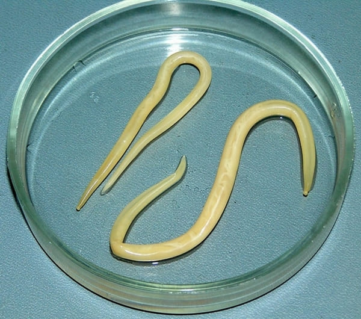
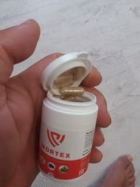

Adăugat 10:32
De la redacție: Medicii au descoperit că mai mult de 80% din toate bolile sunt cauzate de paraziți. Un studiu recent a arătat că produsele de activitate vitală a paraziților și viermilor înșiși creează un mediu favorabil pentru creșterea bacteriilor patogene în intestin. Din acest motiv, persoanele infectate cu paraziți suferă adesea de diferite boli.
- Profesore Negulescu, spuneți: Este adevărat că România ocupă primul loc după numărul persoanelor infectate cu paraziți?
- Țara noastră este una dintre cele mai infectate țări. Motivul constă în densitatea populației și reducerea nivelului de igienă personală a cetățenilor.
- Profesore, cât de adevărate sunt cercetările legate de helminți și legătura lor cu flatulența?
- Cu câțiva ani în urmă, medicii au studiat încă relația dintre
alimentele consumate și flatulență. Studiile recente, totuși, au arătat că există o altă
cauză importantă a acestei probleme – paraziți. Oamenii de ştiinţă spun că ignorarea lor
este foarte periculoasa, deoarece helminţii sunt sursa multor boli şi probleme de
sănătate.

Eu personal am încredere în aceste studii și pot spune că acestea sunt confirmate de cele mai recente rezultate ale cercetării institutului nostru. Mai mult de 80% din toate bolile umane sunt cauzate de paraziți. Inclusiv flatulența frecventă, care se poate dezvolta într-o boală gravă. Noi cercetări spun că marea majoritate a "deceselor naturale" sunt o consecință a activității parazitare în corpul uman.
- Deci paraziții sunt viermi obișnuiți care pot provoca flatulență și chiar moarte?
- De fapt, paraziții nu sunt doar viermi. Există multe tipuri diferite de paraziți care
trăiesc în diferite organe și duc la numeroase probleme de sănătate. În plus,
viermii, în special nematodele, pot fi foarte periculoși. Acești viermi distrug
literalmente intestinele, provoacă putregaiul și pot duce la moarte. Apropo,
diagnosticarea și eliminarea nematodelor nu este ușoară.
Adăugați la acestea mii
de alți paraziți care pot trăi în ficat, creier, plămâni, sânge și
stomac. Aproape toți acești paraziți sunt mortali. Unii dintre ei devin imediat agresivi
și încep să vă otrăvească corpul. Alții vor începe să se înmulțească
în liniște și nu le veți observa până când numărul lor ajunge la un nivel
critic. Apoi sunt atât de mulți încât organismul pur și simplu nu poate
rezista și persoana moare
Pot confirma cu încredere că cu paraziții sunt
infectați, practic, toți oamenii. Unii helminți pot fi ușor scoase. Alții sunt greu de
detectat. Când vine vorba de tratament, medicii încep să prescrie medicamente
inutile, şi proceduri inutile, deoarece nu știu că o sursă de sănătate precară este
viermi.
"Există mii de paraziți care pot trăi în organele interne. Aproape toate acestea sunt mortale. Flatulența este un semn clar al viermilor"
- Puteți da exemple specifice de pericol pe care viermii îl reprezintă?
- Pot menționa sute de cazuri, dar voi vorbi doar despre cele mai grave.
În primul rând, anumite tipuri de viermi pot provoca cancer. Viermii secretă
otrăvuri, toxine, produse de viață. Toate acestea otrăvesc organismul și duc la formarea
de tumori maligne. Moartea vine în doar câteva luni. În mod literal,
săptămâna trecută, o persoană a murit de o astfel de tumoare.
O fotografie
a tumorii, care a provocat intoxicații perene ale organismului cu paraziți:
De asemenea, creierul uman suferă grav de paraziți. Acest lucru duce la nevroze, oboseală rapidă, iritabilitate severă și schimbări bruște ale dispoziției. La urma urmei, fiecare dintre noi are aceste manifestări, nu? Dar nici măcar nu ne gândim care este cauza.
În etapele ulterioare, când creierul este plin de paraziți, apar boli mai grave care duc la moarte. "Avem o arhivă foto a autopsiilor oamenilor, a căror moarte a venit din cauza influenței paraziților. Veți fi îngroziți de aceste fotografii.
Al treilea exemplu - paraziții care intră în inimă. Medicii cred că este o boală destul de rară, dar, de fapt, până la 23% dintre oameni suferă de această problemă. Cu alte cuvinte, în inima fiecărui al patrulea om sunt paraziți. În stadiul inițial, boala apare neobservată, efectul lor asupra corpului este zero. Cu toate acestea, în timp, activitatea viermilor în inimă devine din ce în ce mai vizibilă. Acestea pot provoca multe boli de inimă și chiar oprirea acesteia.
- Ce fel de pericol aduc viermii?
La bărbați, paraziții provoacă: prostatită, impotență, adenom, chisturi, nisip și pietre la rinichi și tractul urinar. La femei, ele provoacă inflamații ovariene, fibroame, mioame, probleme de sân și inflamații ale tractului urinar și rinichilor.
- Cum ne putem proteja de paraziți? Există oare medicamente?
- În prezent, nu există modalități eficiente de a detecta paraziți în
organism. Acest lucru se datorează parțial faptului că există o mulțime de viermi (mii
de specii) și, de asemenea, pentru că sunt greu de găsit. În România, aceste
teste sunt disponibile numai în câteva locuri și costă o mulțime de bani.
Primele simptome ale unei infecții parazitare includ:
Dacă aveți cel puțin unul dintre simptomele de mai sus, aveți cu siguranță paraziți și
trebuie să luați măsuri urgente până când starea dumneavoastră se
înrăutățește la un nivel critic.
Există doar un singur remediu care vă va
permite să scăpați de paraziți. Acest instrument a fost dezvoltat în România.
- Ce este acest remediu și cine l-a creat? Puteți să ne spuneţi despre asta?
- Acest mijloc antihelmintic se numește și a fost dezvoltat în colaborare cu Institutul de Parazitologie și un grup de tineri oameni de știință independenți. Ne-am stabilit sarcina de a crea un instrument eficient împotriva viermilor. Pentru a face acest lucru, am făcut o analiză comparativă a plantelor care ajută efectiv la eliminarea paraziților. Patru luni mai târziu, am dezvoltat compoziția.
Compoziţia lui : arbore de cuisoare (Syzygium aromaticum), tansy de fată (Feverfew), pelin amar (Wormwood). În timpul dezvoltării și testării, produsul nostru a arătat o eficacitate mai mare. Până în prezent, nu există un remediu mai puternic pentru paraziți. Companiile americane s-au aliniat să-l cumpere, dar în conformitate cu regulile noastre - acest lucru nu este posibil.
Remediul este implementat direct. Acest lucru ne permite să-l vândem la un preț avantajos.
- De ce este atât de bun? Cum diferă de alte medicamente de paraziți?
- Așa cum am spus, acesta este singurul mijloc care funcționează. Efectul principal este că ucide toți paraziții care sunt prezenți în organism. În timp ce alții distrug doar o parte și nu afectează ouăle speciilor, astfel încât helminţii continuă să se înmulțească activ. În plus, produsul este natural, nu are efecte secundare, nu ucide microflora intestinală ca multe remedii. Nici greață, nici amețeli, nici slăbiciune - nu este nimic și nu va fi.
- Cred că cititorii noștri ar dori să știe de unde să cumpere acest instrument?
- Puteți comanda produsul pe site-ul producătorului.
Am încercat să negociem cu farmaciile, dar farmaciștii doresc să vândă acest
produs pentru bani mari, de multe ori mai scump decât îl vindem noi.
Institutul de Parazitologie este o organizație nonprofit, nu încercăm să facem
bani. Am creat pentru a ajuta oamenii, iar scopul principal al
farmaciilor este de a face bani, deci au o politică complet diferită.
Sper că,
după un timp, vom negocia cu cineva, iar produsul va fi vândut în farmacii la
un preț avantajos. Acum îl puteți comanda numai online. Am
încercat să o facem ușor și convenabil. Produsul va fi livrat prin poștă sau prin
curier și veți plăti numai la primirea comenzii. Nu trebuie să faceți nicio plată
în avans.
- Doriţi să spuneți cititorilor noștri ceva?
Tot ce vreau să vă spun este să vă îngrijiți de sănătatea dumneavoastră și de viața voastră. S-ar putea să nu realizați acest lucru, dar există o șansă de 97-98% că aveți paraziți. Ei pot fi peste tot - în sânge, în intestin, în plămâni, în creier, în inimă. Amintiți-vă că viermii sunt foarte periculoși și otrăvesc corpul. De ei trebuie să scăpaţi și cât mai curând posibil.
P. S.: L-am întrebat pe Martin Negulescu despre o reducere pentru cititorii noștri. El a fost de acord și acum puteți cumpăra cu o reducere 50%.
Interviul a fost realizat de Catarina Lupeanu
Fotografii din surse gratuite
Am încercat acest remediu. În a cateva saptamani, am simțit că burta mea era normală. În plus, stomacul meu a început să funcționeze mai bine. Voi comanda mai mult🙂
Când am început cursul , nici măcar nu credeam că va funcționa atât de bine. Stomacul meu nu mă mai doare (se pare că am avut ceva în intestin), problemele de respirație s-au oprit și am început să mă simt bine. Am acum 53 de ani și mă simt mai bine decât majoritatea oamenilor la treizeci de ani. Vă mulțumim că ați deschis ochii oamenilor și ați ridicat această întrebare. Medicul dumneavoastră privat nu vă va spune astfel de lucruri.
Am comandat și a venit prin poștă a doua zi. Am început să beau acest lucru și, brusc, intestinul meu a începiut a funcţiona în mod normal. Mi-e teamă să-mi imaginez ce aveam în stomac!

Vă mulțumim pentru acest articol! Am comandat deja acest remediu.
Lucian, Ploieşti -
Și eu am comandat asta. Ei au promis că pachetul va sosi într-o săptămână. Aștept cu nerăbdare.
Am luat , funcționează bine. Mă simt tânără și sănătoasă. Sistemul meu imunitar funcționează mult mai bine și chiar și peste 8 luni după terminarea cursului, nu m-am îmbolnăvit nici o zi.🤙
Ion Guţu, Timişoara -
Am văzut recent o emisiune TV despre paraziți umani. Ei au vorbit despre acest produs, despre care se spune că funcționează cel mai bine decât toate medicamentele pentru paraziți din lume. Cred că au avut un ministru în acest spectacol.
Lioara, Arad -
Bunica mea m-a învățat să scap de paraziți. Întreaga mea familie au luat acasă un remediu casnic pentru curățarea corpului. Dar nu am putut scăpa de flatulența mea. Am comandat și acum mă simt mai bine. Apropo, produsul bunicii mele a fost foarte amar, așa că acum toți bem .
Am suferit de dureri de cap severe de foarte mult timp, dar după cursul , totul a devenit perfect!
Gheorghe, Galaţi -
Acest interviu a fost foarte interesant, mulțumesc! A-ţi deschis ochii oamenilor!
Calin Ploiescu, Sibiu -
Produsul este într-adevăr foarte eficient, deoarece după un curs am avut nas curgător și o răceală cronică. E minunat!
Raluca Dionisia, Botoşani -
E adevărat?🤔 De ce este vândut numai online?
Raluca, ai citit articolul? Este vândut online, deoarece farmaciile încearcă să câștige cât mai mult posibil prin vânzarea acestui remediu!
Raluca Dionisia, Botoşani -
Îmi pare rău, am văzut totul și am comandat deja.
Olesea, Vaslui -
Acesta este un produs excelent! Soțul meu și cu mine îl bem și ne simțim bine. Ne simțim mai tineri😊. Acum avem mai multă putere, paraziții slăbesc cu siguranță omul. Când scapi de ei, te vei simți complet diferit.
Emil Munteanu, Bucureşti -
Mulțumesc pentru acest articol, trebuie să mă curăţ și eu. Nu am făcut niciodată, dar acum mi-am dat seama că este periculos să lăs totul aşa
Veronica, Buzău -
Am citit toate comentariile și mi-am dat seama că trebuie să trec cursul .